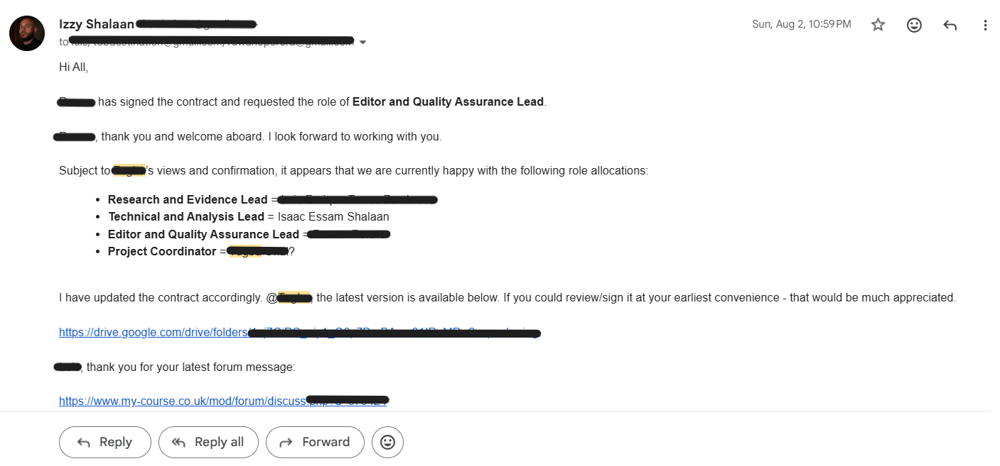
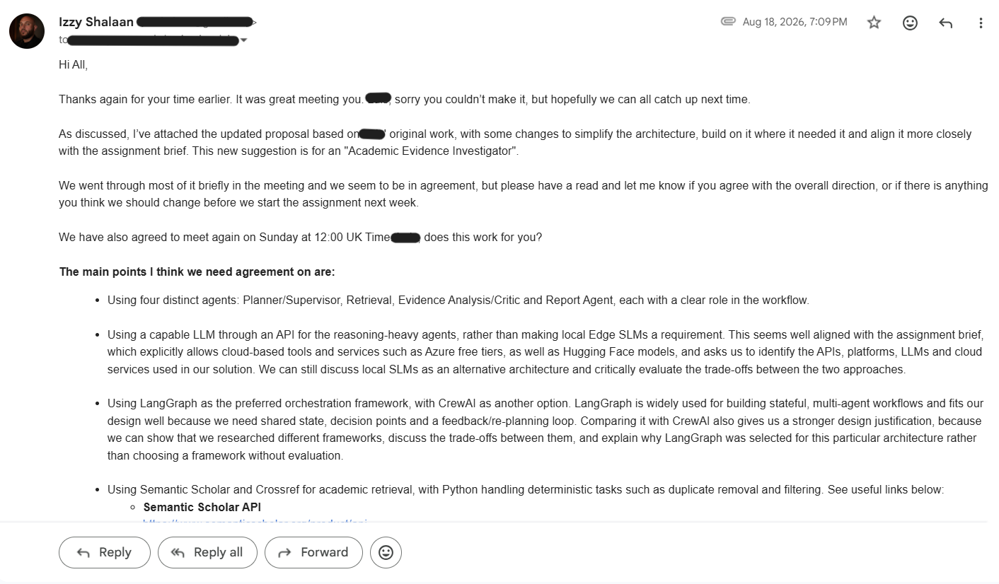
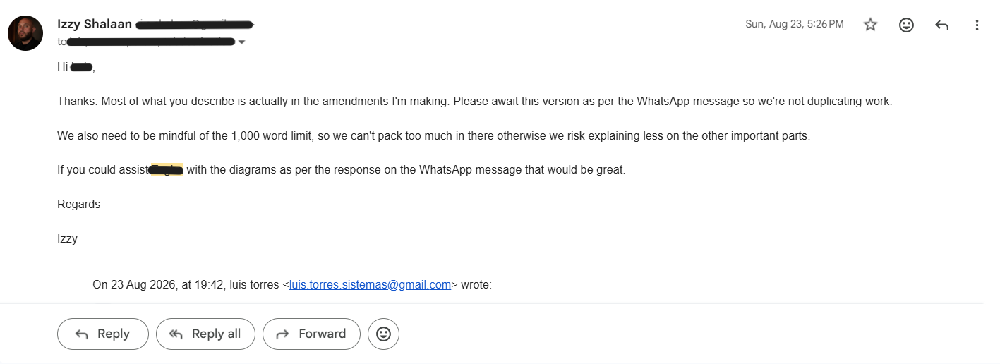
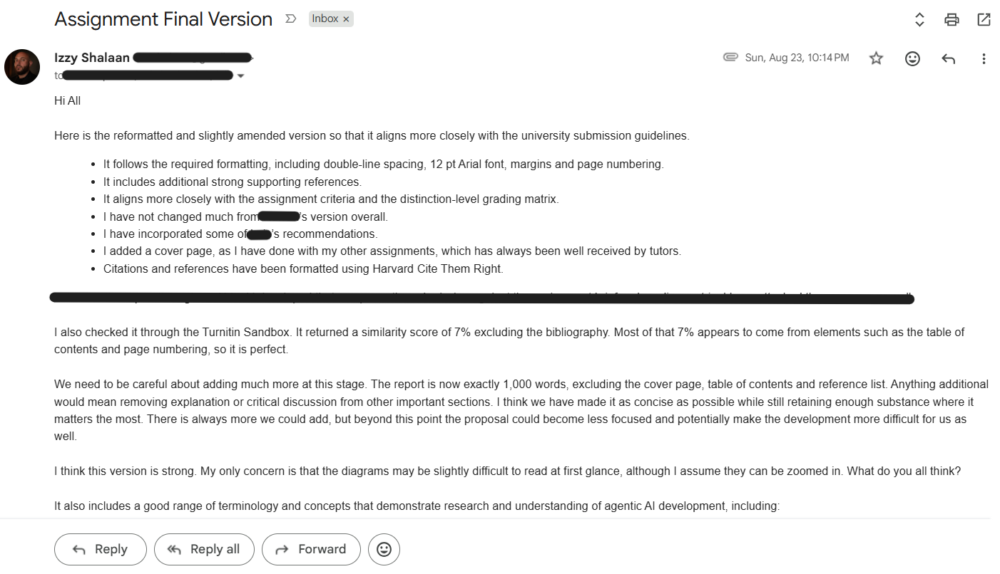
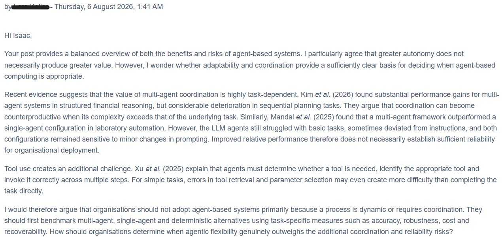
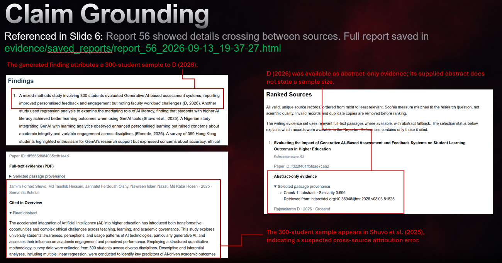
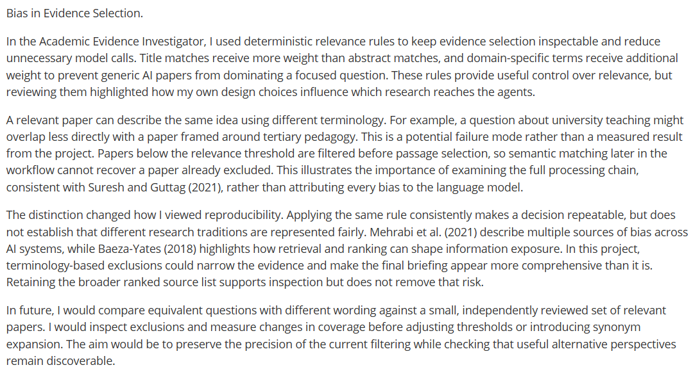
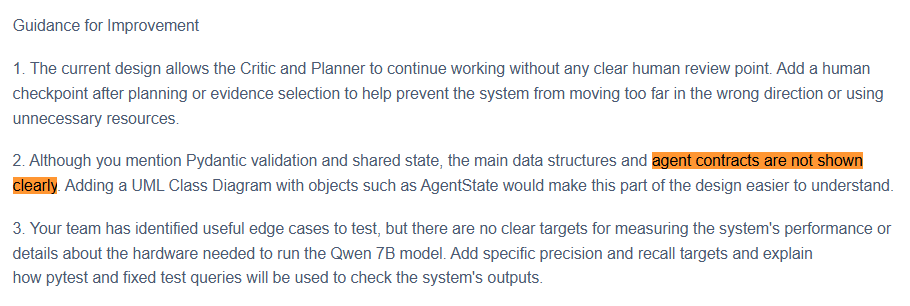
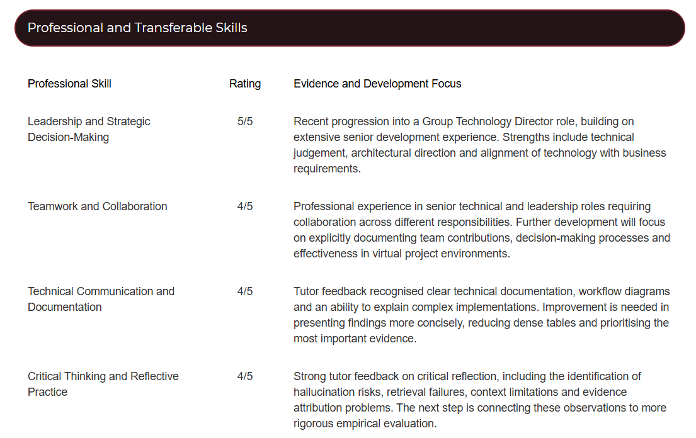

Intelligent Agents challenged the confidence I brought from 18 years in software development and several years implementing AI. I was accustomed to making systems work, but the Academic Evidence Investigator made me reconsider what successful execution actually established. Following Rolfe, Freshwater and Jasper's (2001) framework, I reflect on how collaboration, unreliable outputs and tutor feedback changed my judgement of both agent systems and my own contribution.
I drafted the team contract and proposed responsibilities as Technical and Analysis Lead, seeking peers' agreement (Figure 1). Organising the work drew on familiar strengths, but I now recognise that allocating responsibilities was only a starting point for developing shared understanding.

Figure 1. Team contract and proposed role allocation.
I adapted a peer's initial proposal into the Academic Evidence Investigator design, comparing alternatives and proposing four specialised roles, LangGraph orchestration and academic retrieval services (Figure 2). Inviting challenge mattered because I did not want my professional experience to become a substitute for explaining the choices.

Figure 2. Proposed architecture and team consultation.
As the report developed, I asked peers to avoid duplicated amendments and suggested concentrating effort on diagrams within the word limit (Figure 3).

Figure 3. Coordination to avoid duplicated work.
I incorporated peers' recommendations, revised references and formatting, and circulated the submission for final review (Figure 4). Looking back, these exchanges show how I supported completion, but leave me less certain about how others experienced my coordination.

Figure 4. Final review and integration of feedback.
My instinct was to resolve uncertainty quickly. That helped organise the work, yet could also have narrowed the space for peers to shape it. Edmondson's (1999) account of psychological safety prompted me to distinguish inviting feedback from making disagreement comfortable. I cannot establish the latter from emails. The learning for me is to ask how decisions were understood and record alternatives, rather than assume that an absence of objections means agreement.
An early collaborative discussion made this especially relevant. A peer questioned whether adaptability sufficiently justified agent-based computing and asked about simpler alternatives (Figure 5). Revisiting my response, I recognise how readily I could explain an architecture without establishing its comparative value. The exchange encouraged me to treat challenge as part of design, rather than something to resolve by defending a plausible solution.

Figure 5. Peer challenge to agent-based design.
I began to use theory more critically as a result. BDI helped me organise beliefs, goals and intentions, but our mapping did not reproduce the formal analysis examined by Archibald et al. (2024). ReAct informed the combination of reasoning and action (Yao et al., 2023). These were useful foundations, not evidence that our architecture was superior. I would now be more careful to separate what a theory helps me design from what my own evaluation demonstrates.
Extending retrieval to PDF and HTML passages brought that distinction into sharper focus. A convincing briefing attributed a 300-student sample to a source that did not support it (Figure 6). Looking back, polished presentation offered reassurance that the evidence did not warrant. I responded with targeted checks and regression tests, reconsidering the basis of my confidence. Gao et al. (2023) and Ji et al. (2023) helped me distinguish citation support from broader answer quality and hallucination risk. Fixing the example strengthened the system without establishing how many unfamiliar errors remained.

Figure 6. Source evidence revealing an incorrect sample-size attribution.
The 263 passing Python tests represented substantial engineering work, and I still regard them as valuable evidence. Tutor feedback nevertheless made me reconsider the confidence I attached to them. Ribeiro et al. (2020) support behavioural testing, but regression cases cannot establish live retrieval completeness. Nor did separate Critic and Reporter roles provide independent judgement when they shared a language model. I learned to ask what my checks could miss, alongside whether they passed.
The three-cycle search limit exposed another assumption. I had bounded the process, yet it could still produce a briefing when evidence was judged insufficient. Parasuraman, Sheridan and Wickens (2000) helped me distinguish automating a task from delegating authority over its conclusions. Introducing activity logs and audit records improved visibility, but Miller (2019) encouraged me to ask whether that visibility helped a researcher act. I now see recognising when to stop or withhold a conclusion as part of useful agent behaviour.
My bias case study extended that scrutiny to my deterministic rules (Figure 7). Keyword filtering could exclude relevant research before semantic selection. Although I had not measured that effect, recognising the possibility challenged my tendency to associate predictable code with dependable judgement.

Figure 7. Bias case study on exclusion risks.
I would next introduce an explicit insufficient-evidence outcome and assess whether human review actually helps researchers detect unsupported claims. I would compare bounded re-planning with a single-pass baseline on independently reviewed questions, using retrieval precision and recall, claim support and Critic decision quality. These remain proposed evaluations. Their purpose is to test assumptions that my implementation cannot settle, including whether additional coordination earns its cost.
Tutor feedback on review checkpoints, agent contracts and evaluation targets showed me where my design reasoning needed to become more explicit (Figure 8). In future teamwork, I would agree interfaces, failure responses and acceptance criteria with peers before implementation. I would also ask someone else to explain the intended safeguards back to me. This would give me better evidence of shared understanding than a coherent diagram or an invitation to comment.

Figure 8. Tutor feedback on oversight, contracts and evaluation.
My Professional Skills Matrix identifies collaboration and critical reflection as development areas (Figure 9), while my Personal Development Plan prioritises independent evaluation and responsible governance. I will protect time for these alongside implementation, particularly when balancing work and concurrent modules. Before deployment, I would review externally processed material, licences and accountability. The lasting change is greater willingness to expose my own assumptions to scrutiny, whether they concern an agent's conclusion or how I organise the people developing it.

Figure 9. Skills Matrix priorities in collaboration and reflection.
Beyond the project itself, I have become more cautious about the authority that fluent outputs and clear architectures appear to carry. Neither makes evidence reliable or collaboration effective without challenge. In the next stage of my MSc, I want to make that challenge routine, through independent checks, explicit limits on autonomy and genuine opportunities for others to question decisions before they become embedded in a system.
Archibald, B., Calder, M., Sevegnani, M. and Xu, M. (2024) 'Quantitative modelling and analysis of BDI agents', Software and Systems Modeling, 23, pp. 343–367. Available at: https://doi.org/10.1007/s10270-023-01121-5 (Accessed: 17 October 2026).
Edmondson, A. (1999) 'Psychological safety and learning behavior in work teams', Administrative Science Quarterly, 44(2), pp. 350–383. Available at: https://doi.org/10.2307/2666999 (Accessed: 17 October 2026).
Gao, T., Yen, H., Yu, J. and Chen, D. (2023) 'Enabling large language models to generate text with citations', in Bouamor, H., Pino, J. and Bali, K. (eds.) Proceedings of the 2023 Conference on Empirical Methods in Natural Language Processing. Singapore: Association for Computational Linguistics, pp. 6465–6488. Available at: https://aclanthology.org/2023.emnlp-main.398/ (Accessed: 17 October 2026).
Ji, Z., Lee, N., Frieske, R., Yu, T., Su, D., Xu, Y., Ishii, E., Bang, Y.J., Madotto, A. and Fung, P. (2023) 'Survey of hallucination in natural language generation', ACM Computing Surveys, 55(12), article 248, pp. 1–38. Available at: https://doi.org/10.1145/3571730 (Accessed: 17 October 2026).
Miller, T. (2019) 'Explanation in artificial intelligence: insights from the social sciences', Artificial Intelligence, 267, pp. 1–38. Available at: https://doi.org/10.1016/j.artint.2018.07.007 (Accessed: 17 October 2026).
Parasuraman, R., Sheridan, T.B. and Wickens, C.D. (2000) 'A model for types and levels of human interaction with automation', IEEE Transactions on Systems, Man, and Cybernetics - Part A: Systems and Humans, 30(3), pp. 286–297. Available at: https://doi.org/10.1109/3468.844354 (Accessed: 17 October 2026).
Ribeiro, M.T., Wu, T., Guestrin, C. and Singh, S. (2020) 'Beyond accuracy: behavioral testing of NLP models with CheckList', in Jurafsky, D., Chai, J., Schluter, N. and Tetreault, J. (eds.) Proceedings of the 58th Annual Meeting of the Association for Computational Linguistics. Online: Association for Computational Linguistics, pp. 4902–4912. Available at: https://aclanthology.org/2020.acl-main.442/ (Accessed: 17 October 2026).
Rolfe, G., Freshwater, D. and Jasper, M. (2001) Critical reflection for nursing and the helping professions: a user's guide. Basingstoke: Palgrave. Available at: https://www.ncbi.nlm.nih.gov/nlmcatalog/101129697 (Accessed: 17 October 2026).
Yao, S., Zhao, J., Yu, D., Du, N., Shafran, I., Narasimhan, K.R. and Cao, Y. (2023) 'ReAct: synergizing reasoning and acting in language models', The Eleventh International Conference on Learning Representations. Available at: https://openreview.net/forum?id=WE_vluYUL-X (Accessed: 17 October 2026).